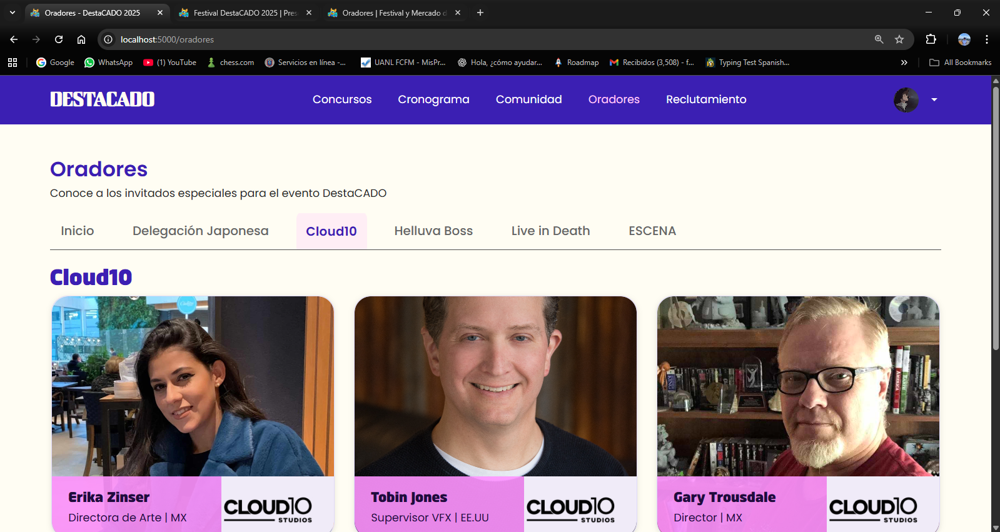
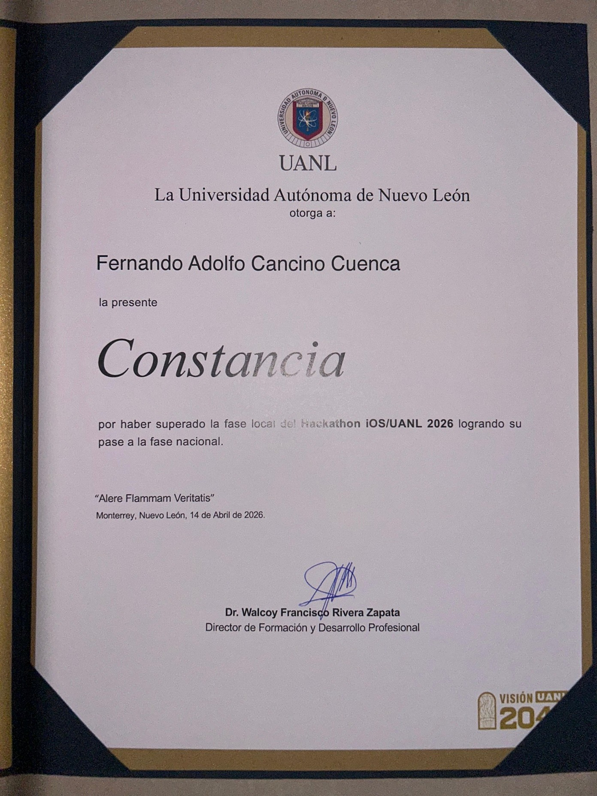

Rediseño completo de la página web de ZomboyShop, implementando un diseño moderno y responsivo.
CaracterÃsticas principales:
Diseño moderno y minimalista
Interfaz responsiva para todos los dispositivos
Optimización de rendimiento
Accesibilidad en el idioma y tipo de cambio $
🎪
Festival DestaCado

Click para ampliar
Proyecto web frontend para Festival DestaCado. Diseñé el módulo de monitoreo de invitados y el diseño web del festival.
Características principales:
Diseño web moderno y responsivo del festival
Sistema de monitoreo y control de invitados
Panel de gestión del evento en tiempo real
Experiencia de usuario optimizada para asistentes y organizadores
â˜ï¸
EC2 Container - AWS
Click para ampliar
Implementación y gestión de contenedores en Amazon EC2 para aplicaciones web.
CaracterÃsticas principales:
Configuración de instancias EC2
Gestión de contenedores Docker
Automatización de despliegues
Monitoreo y escalabilidad
ðŸ¨
Gestión de Hoteles con SQL
Click para ampliar
Sistema de gestión hotelera implementado con SQL para el control eficiente de operaciones.
CaracterÃsticas principales:
Gestión de reservaciones y habitaciones
Control de clientes, personal e inventario
Reportes en tiempo real de ingresos y huespedes
Sistema de facturación integrado y validación de usuarios
💰
Manejo de Nóminas con BigData - CassandraDb
Click para ampliar
Sistema de gestión de nóminas implementado con CassandraDB para el manejo eficiente de grandes volúmenes de datos.
CaracterÃsticas principales:
Procesamiento de grandes volúmenes de datos
Alta disponibilidad y escalabilidad
Análisis predictivo de nóminas
Reportes en tiempo real
📱
CADO Mobile App Backend - MongoDB
Click para ampliar
Backend robusto para aplicación móvil CADO implementado con MongoDB para máxima flexibilidad y rendimiento.
CaracterÃsticas principales:
Arquitectura NoSQL escalable con MongoDB
API RESTful optimizada y metodlogÃa MCV
Sistema de autenticación seguro
Sincronización en tiempo real
🎳
Bolos en Unity con Háptico incluido
Click para ampliar
Simulador de bolos desarrollado en Unity con retroalimentación háptica para una experiencia inmersiva.
CaracterÃsticas principales:
FÃsica realista de bolos
Retroalimentación háptica avanzada
Uso de Arduino, sensores, botones, leds y Unity
Sistema de puntuación detallado y lógica de juego realista
ðŸƒ
Escape Salvaje en Unity
Click para ampliar
Juego de aventura y supervivencia desarrollado en Unity con mecánicas de escape y puzzle.
CaracterÃsticas principales:
Mundo abierto explorable
Sistema de puzzles complejos
IA avanzada para enemigos
Mecánicas de supervivencia
ðŸ¬
Candy Collector con OGL Engine y C++
Click para ampliar
Juego de recolección desarrollado con OpenGL y C++ para demostrar habilidades de programación de bajo nivel.
CaracterÃsticas principales:
Motor gráfico personalizado con OpenGL
Optimización de rendimiento en C++
Sistema de partÃculas personalizado
FÃsica de juego optimizada y hardcodeada
ðŸ
Snake Slaughter con OGL Engine y Lenguaje Ensamblador
Click para ampliar
Reimaginación del clásico juego Snake implementada con OpenGL y optimizaciones en lenguaje ensamblador.
CaracterÃsticas principales:
Optimizaciones en ensamblador
Renderizado eficiente con OpenGL
Mecánicas de juego mejoradas
Sistema de puntuación, vidas y colisiones
🎓
Innovation Through Design - Sydney University
Click para ampliar
Certificación en innovación y diseño de la Universidad de Sydney, enfocada en metodologÃas de diseño centrado en
el usuario.
CaracterÃsticas principales:
MetodologÃas de diseño innovador
Pensamiento crÃtico y creativo
Resolución de problemas complejos
Desarrollo de prototipos
â˜ï¸
GoogleCloud Fundamentals - Google
Click para ampliar
Certificación en fundamentos de Google Cloud Platform, cubriendo los conceptos básicos de la nube y sus servicios.
CaracterÃsticas principales:
Fundamentos de computación en la nube
Servicios de Google Cloud Platform
Seguridad y cumplimiento
Arquitectura de soluciones cloud
👥
Introduction to User Experience Design - Georgia Institute of Technology
Click para ampliar
Certificación en diseño de experiencia de usuario, enfocada en metodologÃas y prácticas de UX/UI.
CaracterÃsticas principales:
Principios de diseño UX/UI
Investigación de usuarios
Prototipado y wireframing
Evaluación de usabilidad
💡
Desarrollo rápido de productos innovadores para mercados emergentes - Tec de Mty
Click para ampliar
Certificación en desarrollo ágil de productos innovadores, enfocada en metodologÃas de innovación y
emprendimiento.
CaracterÃsticas principales:
MetodologÃas ágiles de desarrollo
Innovación y emprendimiento
Análisis de mercados emergentes
Gestión de proyectos innovadores
🏅
Reconocimiento iOSLab

Click para ampliar
Reconocimiento obtenido en iOSLab por el desempeño y la contribución en el laboratorio de innovación.
Características principales: